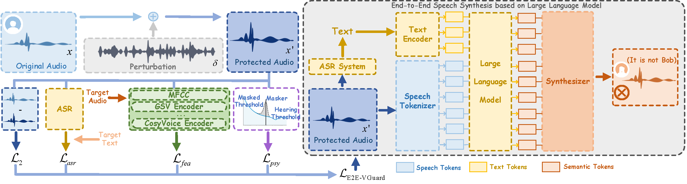

E2E-VGuard:
Adversarial Prevention for Industrial and LLM-based End-To-End Speech Synthesis
[GitHub]
Zhisheng Zhang, Derui Wang, Yifan Mi, Zhiyong Wu, Jie Gao, Yuxin Cao, Kai Ye, Minhui Xue, Jie Hao
Abstract: Recent advancements in speech synthesis technology have enriched our daily lives, with high-quality and human-like audio widely adopted across real-world applications. However, malicious exploitation like voice-cloning fraud poses severe security risks. Existing defense techniques struggle to address the production large language model (LLM)-based speech synthesis. While previous studies have considered the protection for fine-tuning synthesizers, they assume manually annotated transcripts. Given the labor intensity of manual annotation, end-to-end (E2E) systems leveraging automatic speech recognition (ASR) to generate transcripts are becoming increasingly prevalent, e.g., voice cloning via commercial APIs. Therefore, this E2E speech synthesis also requires new security mechanisms. To tackle these challenges, we propose E2E-VGuard, a proactive defense framework for two emerging threats: (1) production LLM-based speech synthesis, and (2) the novel attack arising from ASR-driven E2E scenarios. Specifically, we employ the encoder ensemble with a feature extractor to protect timbre, while ASR-targeted adversarial examples disrupt pronunciation. Moreover, we incorporate the psychoacoustic model to ensure perturbative imperceptibility. For a comprehensive evaluation, we test 16 open-source synthesizers and 3 commercial APIs across Chinese and English datasets, confirming E2E-VGuard's effectiveness in timbre and pronunciation protection. Real-world deployment validation is also conducted. Our code and demo page are available at https://wxzyd123.github.io/e2e-vguard/.
Contents
E2E-VGuard Workflow

Figure 1. The workflow of E2E-VGuard and end-to-end fine-tuning pipeline.
Original and Protected Speech
These samples are original and protected samples from LibriTTS dataset of speaker 5339, respectively.
| Method | Sample 1 | Sample 2 | Sample 3 | |
|---|---|---|---|---|
| Text | Suddenly, a light shown down into Philip's mind. | Her father was right, insane that she might not have set up for yesterday arrow. | He made for the door. | |
| Original | ||||
| Protected | AttackVC | |||
| AntiFake | ||||
| POP | ||||
| POP+ESP | ||||
| SafeSpeech | ||||
| E2E-VGuard (UT) | ||||
| E2E-VGuard (T) |
Synthesized Speech based on Fine-tuning
GPT-SoVITS
| Method | Sample 1 | Sample 2 | Sample 3 | Text | She had talked about it to Kinraed and her father in order to cover her regret at her lovers accompanying her father to see some new kind of harpoon about which the latter had spoken. | One of these seemed of a special consequence to the Good Brothers. They each separately looked at the direction, and then at one another. And without a word, they returned with it unread into the parlor, shutting the door and drawing the green silk curtain close, the better to read it in privacy. | Her life was quiet and monotonous, although hardworking. And while her hands mechanically found and did their accustomed labor, the thoughts that rose in her head always centered on Charlie Kinraid. His ways, his words, his looks, whether they all meant what she would fain believe they did, and whether meaning love at the time, such a feeling was likely to endure. |
|---|---|---|---|
| Ground Truth | |||
| clean | |||
| AttackVC | |||
| AntiFake | |||
| POP | |||
| POP+ESP | |||
| SafeSpeech | |||
| E2E-VGuard (UT) | |||
| E2E-VGuard (T) |
Other Models after Fine-tuning
| Models | Method | Sample 1 | Sample 2 | Sample 3 |
|---|---|---|---|---|
| CosyVoice | clean | |||
| E2E-VGuard (UT) | ||||
| E2E-VGuard (T) | ||||
| Llasa-8B | clean | |||
| E2E-VGuard (UT) | ||||
| E2E-VGuard (T) | ||||
| StyleTTS2 | clean | |||
| E2E-VGuard (UT) | ||||
| E2E-VGuard (T) | ||||
| VITS | clean | |||
| E2E-VGuard (UT) | ||||
| E2E-VGuard (T) |
Multi-Speaker and Multilingual Evaluation
Multi-speaker test from CMU ARCTIC dataset.
| Method | Speaker 1 | Speaker 2 | Speaker 3 |
|---|---|---|---|
| Text | The wolf-dog thrust his gaunt muzzle toward him. | Gregson was asleep when he re-entered the cabin. | The very opposite is true. They are discouraged vagabonds. |
| Ground Truth | |||
| clean | |||
| E2E-VGuard |
Chinese dataset test.
| Method | Speaker 1 | Speaker 1 | Speaker 2 | Speaker 2 |
|---|---|---|---|---|
| Text | 明月村富了，昔日的穷山沟冒出了这样一轮明月，令周围的群众好生羡慕。 | 反正咱高低都不说啥，做人不能忘本，没有老马，哪有云霞的今天，我啥也不说了。 | 昙花一现的王叔文改革，由于发生在唐顺宗永贞年间，所以又被称为永贞革新。 | 安第斯集团由玻利维亚、哥伦比亚、厄瓜多尔、秘鲁和委内瑞拉五国组成。 |
| Ground Truth | ||||
| clean | ||||
| E2E-VGuard |
Synthesized Speech based on Zero-shot
These are synthesized speech from advanced zero-shot TTS models.
| Models | Method | Sample 1 | Sample 2 | Sample 3 |
|---|---|---|---|---|
| Step-Audio-TTS | clean | |||
| E2E-VGuard (UT) | ||||
| E2E-VGuard (T) | ||||
| Spark-TTS | clean | |||
| E2E-VGuard (UT) | ||||
| E2E-VGuard (T) | ||||
| Dia-1.6B | clean | |||
| E2E-VGuard (UT) | ||||
| E2E-VGuard (T) |
Synthesized Speech based on Commercial APIs
These are synthesized speech from Industrial Products.
| Models | Method | Sample 1 | Sample 2 | Sample 3 |
|---|---|---|---|---|
| ByteDance | clean | |||
| E2E-VGuard (UT) | ||||
| Alibaba | clean | |||
| E2E-VGuard (UT) | ||||
| MiniMax | clean | |||
| E2E-VGuard (UT) |